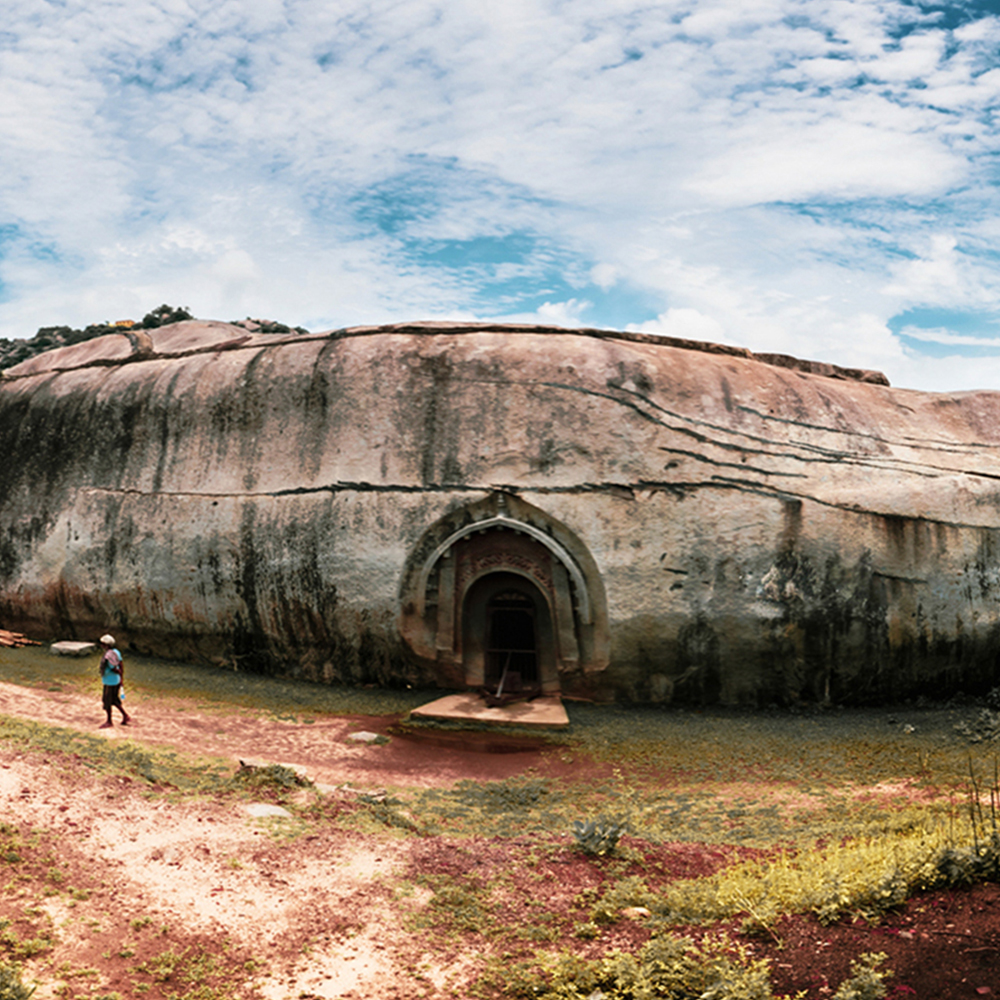
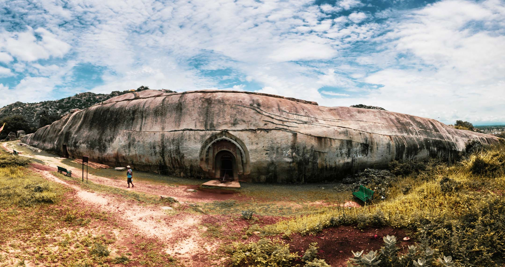
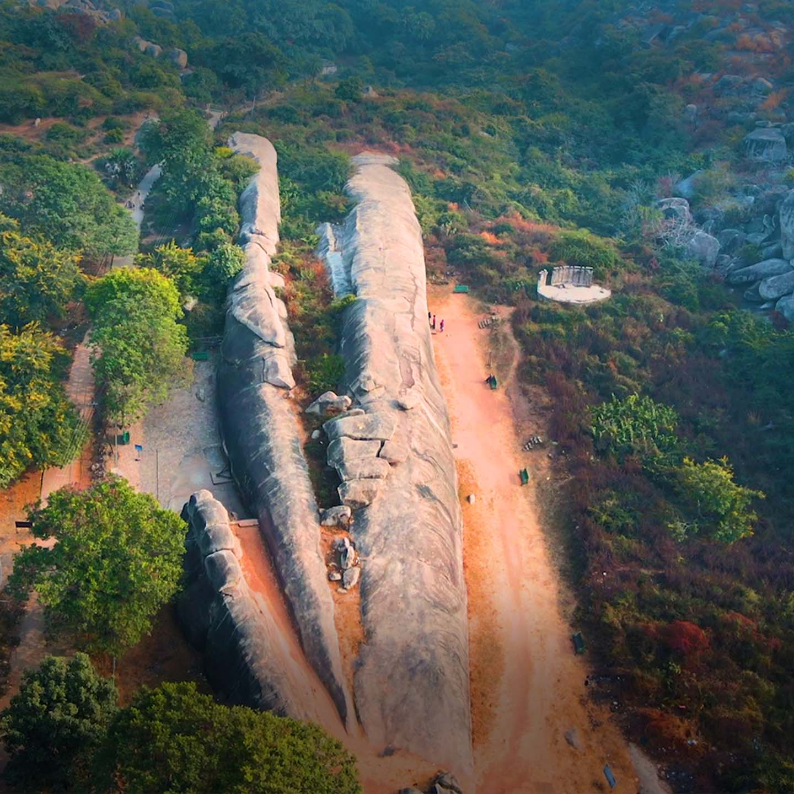
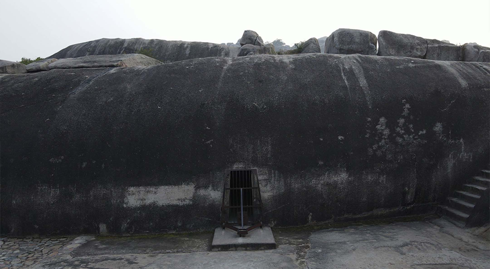

About Barabar Caves
The Barabar Caves are cut into granite hills in Jehanabad district. Carved in the 3rd century BCE, they are the oldest surviving rock-cut caves in India. Emperor Ashoka and his grandson Dasharatha dedicated chambers here to Ajivika ascetics.
The interiors still carry the famous Mauryan polish: walls and vaults so finely finished that they reflect torchlight after more than two thousand years. The nearby Nagarjuni caves belong to the same hill complex.
Historical Significance
Inscriptions inside the caves record royal grants and help date the work to Ashoka's reign. The site is the starting point of Indian rock-cut architecture, later echoed in Buddhist chaityas from the Western Ghats to Ajanta.
Architecture
Four caves form the main Barabar group: Lomas Rishi, Sudama, Vishwakarma, and Karan Chaupar. Lomas Rishi is known for its chaitya-arch doorway carved to imitate timber. Most chambers are simple rectangular halls with barrel-vaulted ceilings and almost no sculpture.




Visitor Information
Reach the hills from Jehanabad or Gaya; a short climb leads to the cave mouths. Carry water, wear sturdy shoes, and visit in the cooler months from October to March. Allow time for both the Barabar and Nagarjuni groups.
← Back to Destinations